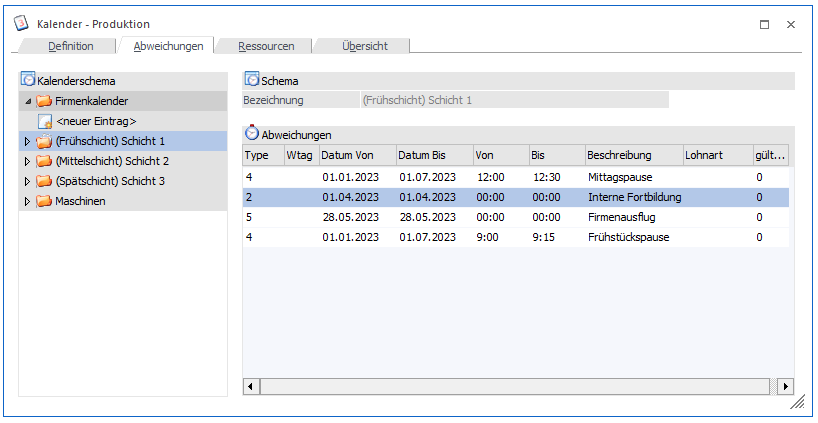
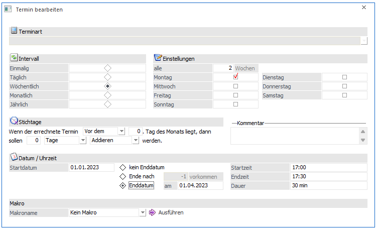

Im Register "Abweichungen" kann die Arbeitszeit des Schemas verlängert oder verkürzt werden.

Folgende Eingabefelder können bearbeitet werden:
Ø Kalenderbaum
Auswahl für welches Schema die Abweichung definiert werden soll (kann auch für den gesamten Firmenkalender definiert werden)
Abweichungen
Ø Typ
Es stehen folgende Typen zur Verfügung:
ü 0 - Erweiterung Wochentag
Die
Arbeitszeit wird verlängert. Im definierten Zeitraum gilt dies für einen
bestimmten Wochentag (siehe Feld "Wochentag").
ü 1 - Erweiterung Datum
Die
Arbeitszeit wird verlängert. Im definierten Zeitraum gilt dies für jeden
Arbeitstag.
ü 2 - Erweiterung Termin
Die
Arbeitszeit wir verlängert. Bei Wahl dieser Option steht im Feld "Datum von" ein
Matchcode zur Verfügung der in den Programmbereich "Termin bearbeiten"
verzweigt. Hier können detaillierte Definitionen eines Termins eingegeben
werden. Details dazu finden Sie im Kapitel "Termin bearbeiten" in der
Dokumentation von WinLine FAKT.

ü 3 - Reduktion Wochentag
Die
Arbeitszeit wird verkürzt. Im definierten Zeitraum gilt dies für einen
bestimmten Wochentag (siehe Feld "Wochentag").
ü 4 - Reduktion Datum
Die
Arbeitszeit wird verkürzt. Im definierten Zeitraum gilt dies für jeden
Arbeitstag.
ü 5 - Reduktion Termin
Die
Arbeitszeit wir verkürzt. Bei Wahl dieser Option steht im Feld "Datum von" ein
Matchcode zur Verfügung der in den Programmbereich "Termin bearbeiten"
verzweigt. Hier können detaillierte Definitionen eines Termins eingegeben
werden. Details dazu finden Sie im Kapitel "Termin bearbeiten" in der
Dokumentation von WinLine FAKT.
Ø Wtag
Auswahl, für welchen Wochentag die Arbeitszeit verändert werden soll. Sollen mehrere Wochentage bearbeitet werden, können in der Tabelle mehrere Zeilen erfasst werden.
Ø Datum von/bis
Definition des Gültigkeitsbereiches der Arbeitszeitänderung.
Ø von/bis
Definition der neuen Zeitspanne.
Achtung
Die Abweichungen gelten additiv. D.h. ist die Normalarbeitszeit von 08:00Uhr bis 16:00Uhr und soll nun in einer bestimmten Periode von 06:00Uhr bis 16:00Uhr gearbeitet werden, dann ist als Abweichung von 06:00Uhr bis 08:00Uhr zu definieren.
Ø Beschreibung
Eingabe einer Bemerkung über die Gründe der Abweichung.
Ø Lohnart
Wird zurzeit noch nicht unterstützt.